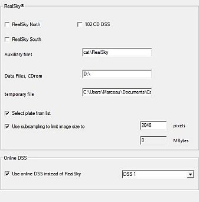

Imatges
Hi ha dos llocs per administrar les imatges .fit:
- directori_CdC\data\pictures\sac\ que conté imatges dels objectes SAC.
- Els meus documents\Usuari\Configuració local\Dades de programa\Skychart\pictures\ que es fa servir per desar les imatges baixades des del DSS o imatges temporals de RealSky.
Objectes

Cartes del Cel pot mostrar els objectes de cel profund en el mapes d'una manera més realista en forma d'imatges FITS. Això pot ser independent de la presentació de símbols per als objectes de cel profund. I ho pot fer en qualsevol camp de visió, depenent de la mida de la imatge.
Abans de res cal que escanegeu el directori on hi ha les imatges FITS, vegeu més amunt per carregar les característiques de les fotos en la base de dades CdC.
Podeu posar en l'àrea d'entrada un camí alternatiu cap a un altre directori. Ajudeu-vos amb la icona  del directori d'imatges, a la dreta.
del directori d'imatges, a la dreta.
Quan l'escanejat s'hagi acabat obtindreu el missatge: Hi ha xxxx imatges catalogades (9894 ja en la versió beta 3.0).
Es pot variar la lluminositat i el contrast de les imatges. Cal que marqueu la casella “Mostra les imatges en la carta”, al peu de la finestra, o bé en la icona de la barra d'objectes “Mostra les imatges”.
Si encara no heu instal·lat cap d'aquestes imatges, us puc recomanar que descarregueu i instal·leu el paquet d'imatges SAC.
Fons

Aquí podeu obrir un fitxer d'imatge FITS a mostrar entrant-hi el nom de fitxer. Després d'una instal·lació nova el directori per defecte pot ser un d'aquests o /home/[user]/cartes_du_ciel/pictures per al Linux. En aquest directori hi trobareu usualment el darrer fitxer FITS que hagueu baixat dels recursos DSS. (anomenat “$temp.fit”). Podeu indicar el directori de qualsevol altra font de fitxers FITS. Per exemple, si ja vàreu instal·lar el paquet d'imatges SAC amb una instal·lació típica de Cartes del Cel, podeu obrir imatges FITS d'objectes de cel profund en el vostre mapa des del directori /usr/share/apps/skychart/pictures/sac (Linux) o C:\Fitxers de programa\Cartes del Cel\data\pictures\sac (Windows). El mapa actiu serà reposat d'acord amb la configuració de la imatge seleccionada.
Podeu variar-ne la lluminositat i el contrast. Cal que marqueu la casella “Mostra aquesta imatge” per activar la presentació.
DSS Realsky

Cartes del Cel pot mostrar imatges FITS per a qualsevol lloc del mapa. Aquesta finestra està pensada per configurar de quines fonts s'obtenen aquestes imatges. Les podeu baixar d'Internet, o si teniu el conjunt de CD-ROM de RealSky, des del vostre lector de CDs.
{kind=link}
RealSky
Aquí podeu indicar el camí on es troba el CDrom de RealSky en el vostre PC.
Heu d'indicar el subconjunt de CDs, el lloc on hi ha els fitxers auxiliars, el camí del vostre lector de CDs i el lloc on els fitxers temporals poden ser desats.
Podeu especificar si desitgeu triar una placa d'una llista i la mida límit de la imatge.
DSS en línea
Si esteu connectat a Internet, podeu baixar imatges FITS des del Digital Sky Survey (DSS). En la caixa de diàleg podeu especificar quin conjunt d'imatges voleu obtenir.
La mida de les imatges que demaneu està limitada pel camp de visió. Usualment, no podreu obtenir imatges quan feu servir un camp de visió més gran de dos graus d'arc. Com més gran és el camp, més altes són les probabilitats que la vostra demanda es tanqui, o que no sigui suportada pel servidor en absolut. Heu de tenir present que generar la imatge per a la descàrrega menja molta memòria de la CPU en el lloc del servidor, per tant us cal tenir paciència.
Per saber més com carregar una imatge del DSS, feu clic aquí.
Per saber com mostrar aquestes imatges, feu clic aquí.
I per llegir més sobre la configuració dels recursos per baixar de la xarxa aquestes imatges, premeu aquí.
Per mostrar o amagar la imatge també podeu usar la drecera CTRL-I.